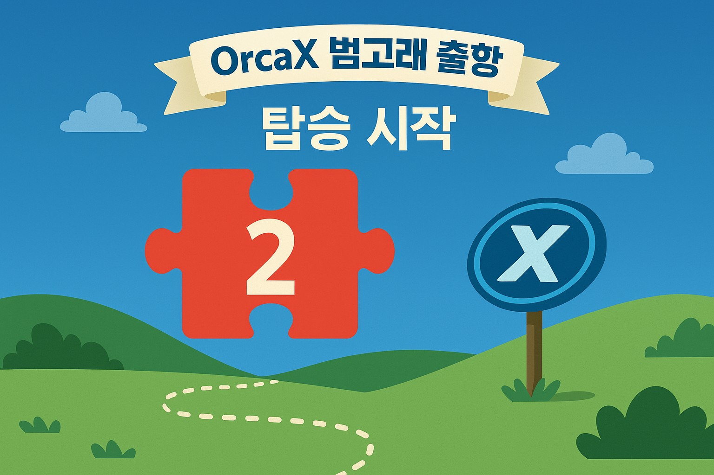
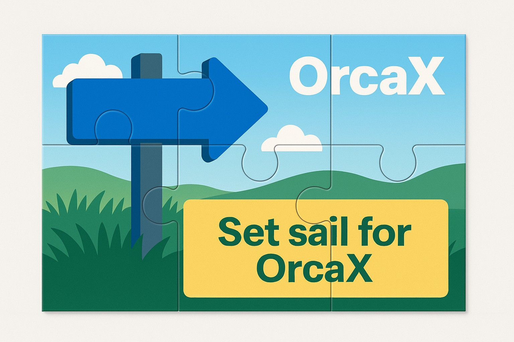

오르카의 지느러미는 혁신의 물결을 읽는다.
고요한 바다에서 파도는 가장 먼저 지느러미가 감지합니다.
범고래 Orca는 바다의 변화에 민감하게 반응하며,
조용히 방향을 틀고, 흐름을 읽고, 거대한 물살 위를 가로지릅니다.
OrcaX는 단순한 크립토 프로젝트가 아닙니다.
그 지느러미는 실물자산(RWA)과 블록체인 기술, 그리고 Web3 생태계의 미래를 감지하며 움직입니다.
한 발 앞선 감각, 그것이 바로 혁신의 DNA입니다.

